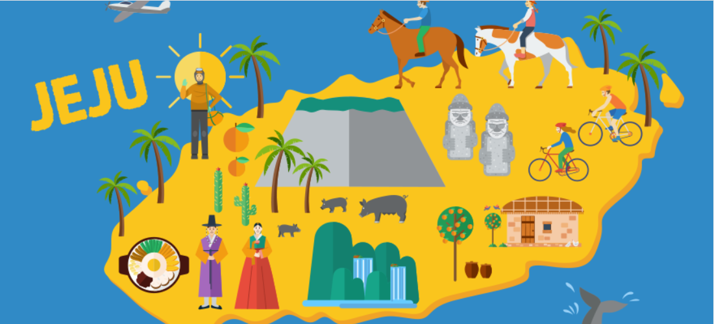

{% extends 'base.html' %}
{% block content %}
{% load static %}

<!--<template backroundColor="black">-->
    <meta name="viewport" content="width=device-width, initial-scale=1">
    <div class="container"> 
        <section id="main">
            <!-- <div id='surveyElement'>
                <survey :survey="surveyModel"/>
            </div> -->
            <h2>당신의 결과는 다음과 같습니다!</h2>
            <br>
            
        </section>
    </div>
    <div>
        <a href="{% url 'route:first' %}"><button id="CButton">다시하기</button></a>
        <a href="{% url 'route:index' %}"><button id="CButton">완료하기</button></a>
    </div>
<!--
</template>

<script> export default {} 
</script> 
-->
<style>
#main {
    background-color: whitesmoke;
    color: rgb(50, 50, 50);
    width: 80%;
    text-align: center;
    border-radius: 20%;
    margin: auto;
    margin-top: 10px;
    padding-top: 5px;
    padding-bottom: 5px;
    padding-left: 3px;
    padding-right: 3px;
}

input[type="radio"] {
  zoom: 1.3;
}

label {
    padding:5px;
    color:#222;
    font-family:corbel,sans-serif;
    font-size: 15px;
    margin: 10px;
    vertical-align:top;
}

#CButton {
    padding: 5px;
    margin: 10px;
    vertical-align: middle;
    width: auto;
    position: relative;

    color: #222;
    background: none;
    border: solid 1px;
    border-radius: 2em;
    font: inherit;
    font-size: 15px;
    font-style: bold;
    padding: 0.75em 2em;
    cursor: pointer;
    outline: none;
  }


</style>

{% endblock %}